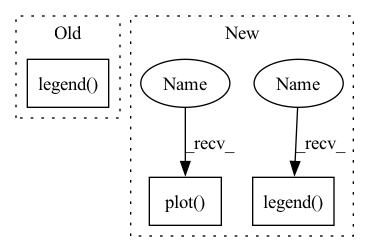

Pattern ID :20088
Before Change
plt.text(v[2] - 12, v[3] - 1.5, "640", size=16)
fontdict = {"size": 18, "weight": "bold"}
plt.legend(loc="best")
plt.grid()
plt.xlabel("CPU Speed (ms/img)", fontdict=fontdict)
plt.ylabel("F1$\mathbf{_{score}}$ (%)", fontdict=fontdict)
plt.xticks(range(0, 701, 100), size=12, weight="bold")After Change
x, y, ls="-", label=lb, c=c[i], linewidth=3,
marker="", markersize=10)
// 画点288
plt.plot( v[0], v[1], marker="^", c=c[i], markersize=15)
plt.plot(v[2], v[3], marker="s", c=c[i], markersize=15)
// 添加额外的标签
if False:
if i == 0:
plt.text(v[0]-12, v[1]-1.5, "288", size=16)
plt.text(v[2] - 12, v[3] - 1.5, "640", size=16)
fontdict = {"size": 18, "weight": "bold"}
plt.legend(loc=2, bbox_to_anchor=(1.0, 1.0), borderaxespad=0.)
plt.grid()
plt.xlabel("Detection Speed (FPS)", fontdict=fontdict)
plt.ylabel("F1 score (%)", fontdict=fontdict)
plt.xticks(range(0, 100, 5), size=12, weight="bold")In pattern: SUPERPATTERN
Frequency: 4
Non-data size: 3
Instances Fragment ID: 65776059
Project Name: zhangzhengde0225/cdnet
Commit Name: a0f8516f4475709bb69cde3c6aa56c9e245fe120
Time: 2021-03-15
Author: zhangzhengde0225@gmail.com
File Name: for_paper/CDNet_plot.py
M Class Name: CDNetPlot
N Class Name: CDNetPlot
M Method Name: plot(1)
N Method Name: plot(1)
M Parent Class: object
N Parent Class: object
M File Name: for_paper/CDNet_plot.py
N File Name: for_paper/CDNet_plot.py
M Start Line: 49
M End Line: 53
N Start Line: 38
N End Line: 62
Before Change
ax2.set_xlabel("Epoch")
ax2.set_ylabel("Accuracy")
ax2.set_title("Training and Validation Accuracy vs. Epoch")
ax2.legend( ["Training", "Validation"])
plot_name = "{}_train_val_loss.png".format(name)
f.savefig(plot_name)
service.upload_file_to_gdrive(plot_name, "evaluate")After Change
ax2.set_title("Validation Triplet Accuracy vs. Epoch")
//ax2.legend(["Training", "Validation"])
ax3 = plt.subplot(1, 3, 3)
ax3.plot( np.arange(len(top1_acc)), top1_acc)
ax3.plot(np.arange(len(top5_acc)), top5_acc)
ax3.set_xlabel("Epoch")
ax3.set_ylabel("Accuracy (%)")
ax3.set_title("Validation Top 1/5 Retrieval Accuracy vs. Epoch")
ax3.legend( ["Top1", "Top5"])
plot_name = "{}_train_val_loss.png".format(name)
f.savefig(plot_name)
Fragment ID: 65776058
Project Name: rvl-lab-utoronto/video_similarity_search
Commit Name: 3c778caa478793a1cd266fe576f3dfdbe0165da1
Time: 2020-09-09
Author: salar77h@gmail.com
File Name: misc/generate_report.py
M Class Name: AnonimousClass
N Class Name: AnonimousClass
M Method Name: plot_training_progress(4)
N Method Name: plot_training_progress(4)
M Parent Class:
N Parent Class:
M File Name: misc/generate_report.py
N File Name: misc/generate_report.py
M Start Line: 67
M End Line: 85
N Start Line: 71
N End Line: 97
Before Change
plt.hlines(threshold, plt_x[0], plt_x[-1], colors="g",
linestyles="dashed")
plt.legend( ["Test", "Prediction"])
if savefig is not None:
plt.savefig(savefig)
After Change
if y_total is not None:
plt_total = y_total[:, :, idx].flatten().copy()
assert len(plt_total) == len(plt_test), "All arrays must have the same length."
plt.plot( plt_x, plt_total, alpha=.75)
legend += ["Total load"]
plt.ylabel("Load (w)")
plt.xlabel("Time (s)")
plt.legend( legend)
if savefig is not None:
plt.savefig(savefig)
Fragment ID: 65776057
Project Name: uca-datalab/nilm-thresholding
Commit Name: dcd15feeb938d4b72d0923dc0951d8e0a73261c7
Time: 2020-05-19
Author: danipg1409@gmail.com
File Name: better_nilm/plot_utils.py
M Class Name: AnonimousClass
N Class Name: AnonimousClass
M Method Name: plot_real_vs_prediction(7)
N Method Name: plot_real_vs_prediction(5)
M Parent Class:
N Parent Class:
M File Name: better_nilm/plot_utils.py
N File Name: better_nilm/plot_utils.py
M Start Line: 28
M End Line: 38
N Start Line: 6
N End Line: 55
Before Change
if masked_test_prec is not None:
ax1.plot(x_epoch, masked_test_prec, "go-", label=prec_labels[2] + ": {:.3f}".format(masked_test_prec[-1]))
ax0.legend()
ax1.legend()
fig.savefig(path)
plt.close(fig)
After Change
ax1.legend()
ax2.legend()
if test_moda is not None:
ax3 = fig.add_subplot(133, title="moda")
ax3.plot( x_epoch, test_moda, "ro-", label="test" + ": {:.3f}".format(test_prec[-1]))
ax3.legend()
fig.savefig(path)
plt.close(fig)
Fragment ID: 65776056
Project Name: hou-yz/mvdet
Commit Name: 21b73128c100196443d134a8dcafbea96c3e842b
Time: 2020-02-06
Author: hou_yz@outlook.com
File Name: multiview_detector/utils/draw_curve.py
M Class Name: AnonimousClass
N Class Name: AnonimousClass
M Method Name: draw_curve(7)
N Method Name: draw_curve(10)
M Parent Class:
N Parent Class:
M File Name: multiview_detector/utils/draw_curve.py
N File Name: multiview_detector/utils/draw_curve.py
M Start Line: 8
M End Line: 25
N Start Line: 8
N End Line: 21
Before Change
plt.text(v[2] - 12, v[3] - 1.5, "640", size=16)
fontdict = {"size": 18, "weight": "bold"}
plt.legend(loc="best")
plt.grid()
plt.xlabel("CPU Speed (ms/img)", fontdict=fontdict)
plt.ylabel("F1$\mathbf{_{score}}$ (%)", fontdict=fontdict)
plt.xticks(range(0, 701, 100), size=12, weight="bold")After Change
marker="", markersize=10)
// 画点288
plt.plot(v[0], v[1], marker="^", c=c[i], markersize=15)
plt.plot( v[2], v[3], marker="s", c=c[i], markersize=15)
// 添加额外的标签
if False:
if i == 0:
plt.text(v[0]-12, v[1]-1.5, "288", size=16)
plt.text(v[2] - 12, v[3] - 1.5, "640", size=16)
fontdict = {"size": 18, "weight": "bold"}
plt.legend(loc=2, bbox_to_anchor=(1.0, 1.0), borderaxespad=0.)
plt.grid()
plt.xlabel("Detection Speed (FPS)", fontdict=fontdict)
plt.ylabel("F1 score (%)", fontdict=fontdict)
plt.xticks(range(0, 100, 5), size=12, weight="bold") Fragment ID: 65776054
Project Name: zhangzhengde0225/cdnet
Commit Name: a0f8516f4475709bb69cde3c6aa56c9e245fe120
Time: 2021-03-15
Author: zhangzhengde0225@gmail.com
File Name: for_paper/CDNet_plot.py
M Class Name: CDNetPlot
N Class Name: CDNetPlot
M Method Name: plot(1)
N Method Name: plot(1)
M Parent Class: object
N Parent Class: object
M File Name: for_paper/CDNet_plot.py
N File Name: for_paper/CDNet_plot.py
M Start Line: 49
M End Line: 53
N Start Line: 38
N End Line: 62